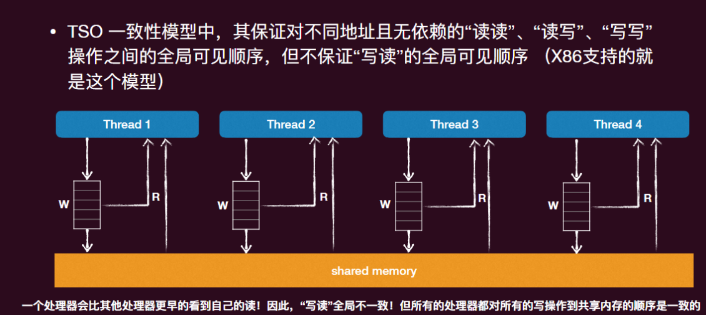

操作系统-03并发-多处理器编程
操作系统本身就是世界上第一个并发程序
并发就是操作系统的核心之一
- 操作系统的很多内部数据结构（如进程列表、页表、文件系统结构）都得考虑数据竞争的可能。
并发的很多技术都是源⾃于操作系统的设计需求和其相应的解决方案
多线程编程入门
并发的基本单位是线程 Thread
什么是线程：共享内存的执行流
- 拥有独立的“上下文”和栈帧列表
- 共享全局变量、堆空间
多线程编程模型
线程的生存周期：
- 线程的一生经历初始化、就绪、运行、等待和结束的周期
- 只有在运行阶段，其 Context 才会在 CPU 上，其余都在内核栈上，当线程处于就绪阶段时其 TCB 在 OS 维护的 ready 列表上等待调度，当线程处于等待阶段时，其 TCB 在 OS 维护的同步等待列表上等待同步事件发生
原子性丧失
原子性：一个原子性的操作即一个在其“更高”的层面上无法感知到它的实现是由多个部分组成的，一般来说，其具有两个属性：
- All or nothing: 一个原子性操作要么会按照预想那样一次全部执行完毕，要么一点也不做，不会给外界暴露中间态
- Isolation: 一个原子性的操作共享变量时中途不会被其它操作干扰，其它所有关于这个共享变量的操作要么在这个原子性操作之前，要么在其之后
原子性的丧失
单处理器多线程
- 线程在运行时可能被中断，切换到另一个线程执行（All or nothing 无法保证）
多处理器多线程
- 线程根本就是并行执行的（All or nothing 和 Isolate 都无法保证）
顺序性丧失
顺序性：程序语句按照既定的顺序执行
然而，只要不影响语义，其实指令是否按顺序执行并不重要
- 编译器会通过 reorder instruction 来优化程序
- 这些优化在单线程下往往没有问题，但一旦到了多线程，很多逻辑就错了
控制执行顺序
- 方法一：在代码中插入“优化不能穿越”的 barrier
- 方法二：使用 volatile 变量，标记每次 load/store 为不可优化
全局一致性丧失
顺序一致性模型提供了以下保证：
- 不同核心看到的访存操作顺序完全一致，这个顺序称为全局顺序
- 在这个全局顺序中，每个核心自己的读写操作可见顺序必须与其程序程序保持一致
- x86 系列的 CPU 不支持顺序一致性
- 要支持顺序一致性在架构和性能上要付出很多
TSO 内存模型

宽松内存模型 Relaxed Memory Model
总结
- 并发的基本单位是线程
- 即共享部分内存的状态机（有自己的私有状态）
- 其状态的变化可以随着另外的进程的“步进”而被动改变
- Posix 提供的标准多线程编程库 Pthread
- 多处理器编程充满挑战，数据竞争下难以保障正确
- 原子性、顺序性和全局一致性都会丧失
Thread 哪些东西是独有的和哪些东西是共享的?
- 独享：寄存器、栈空间、堆空间
- 共享：全局变量
虽然栈空间是每个线程独享的，但这个独享只是一种线程间的“默契”约定而已
- 操作系统并没有强制其它线程不能访问这个线程的栈空间
- 对线程而言，是没有地址空间“保护”这个概念的
- 地址空间“保护”针对的对象是：进程！
- 在操作系统眼⾥，线程本来都是隶属于⼀个进程，他们是“协作”的关系，而不应该存有相互的“恶意”行为
操作系统-03并发-多处理器编程
https://astronautbase.github.io/2025/08/25/操作系统-03并发-多处理器编程/